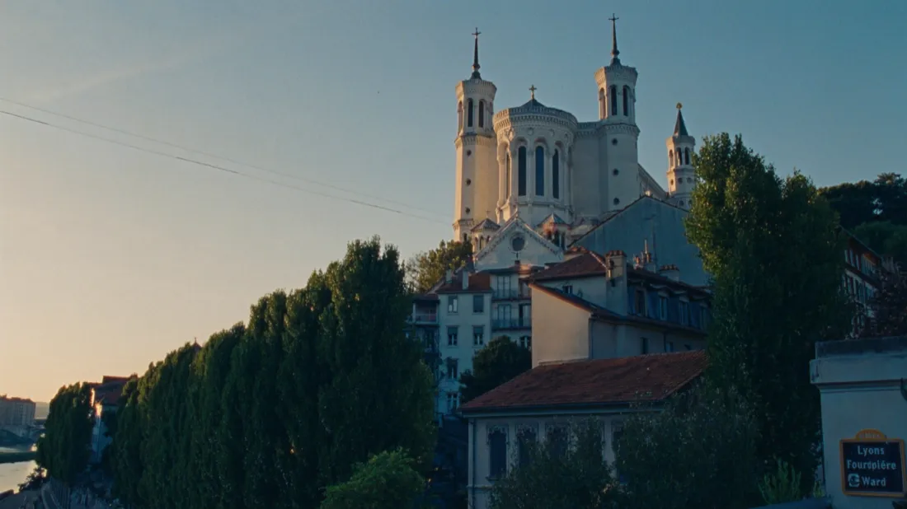
Hilltop Basilica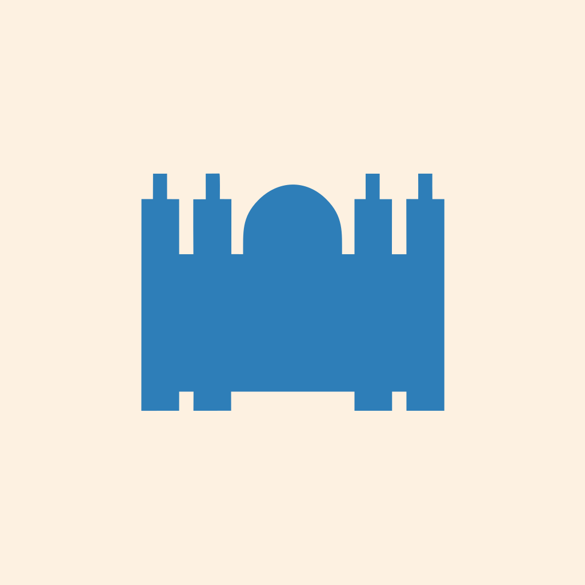
Notre-Dame de Fourvière
The white basilica crowning Fourvière hill above the old city.
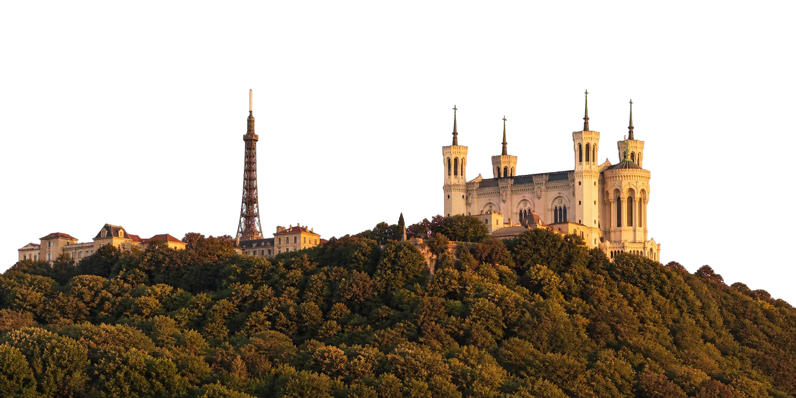
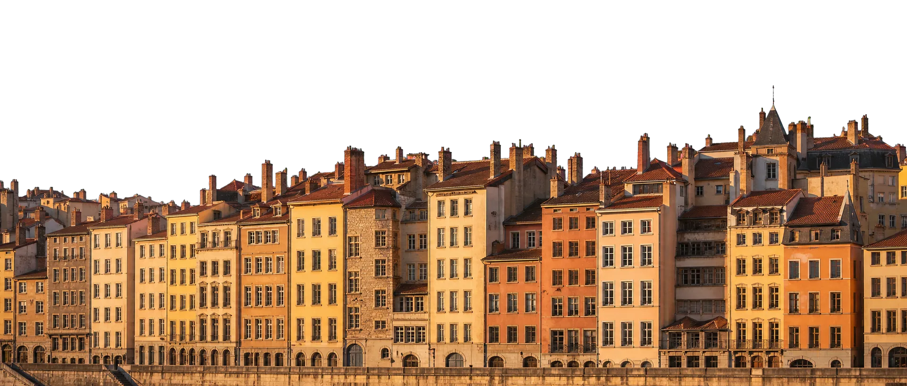
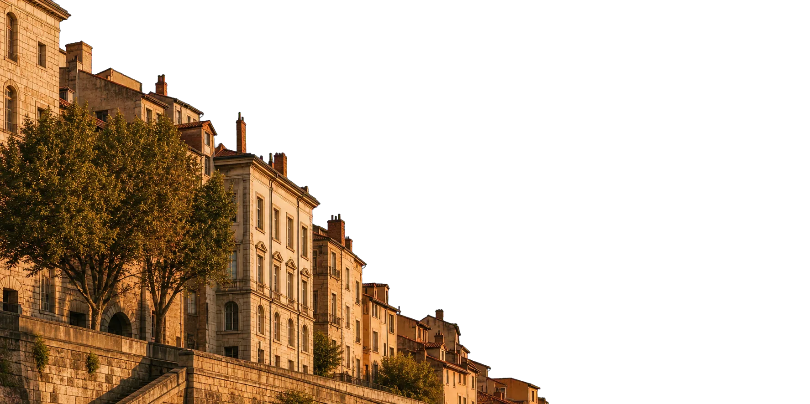
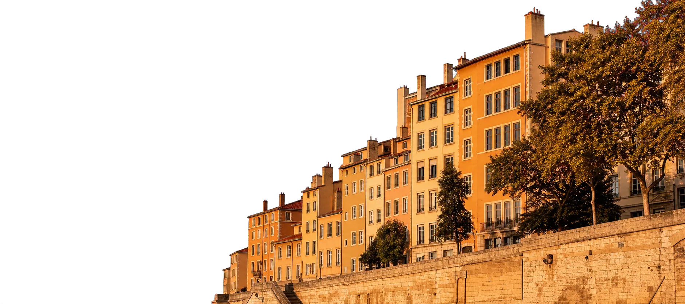
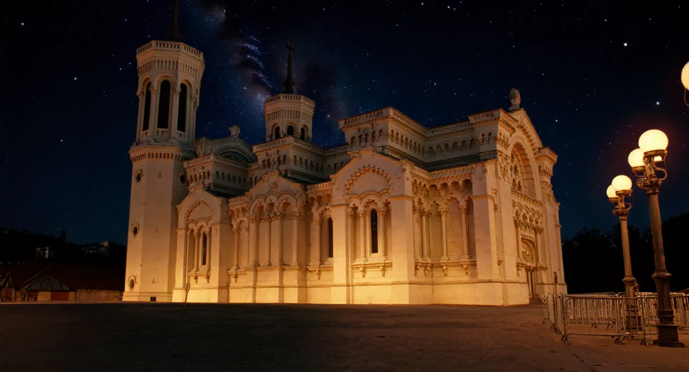
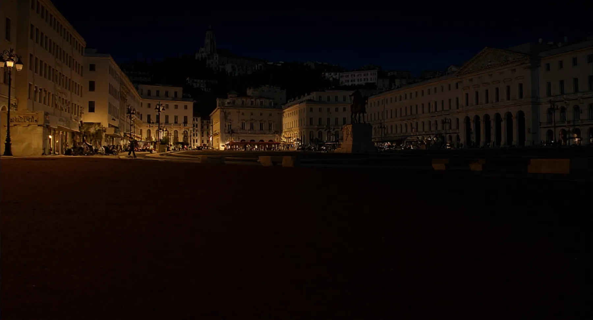
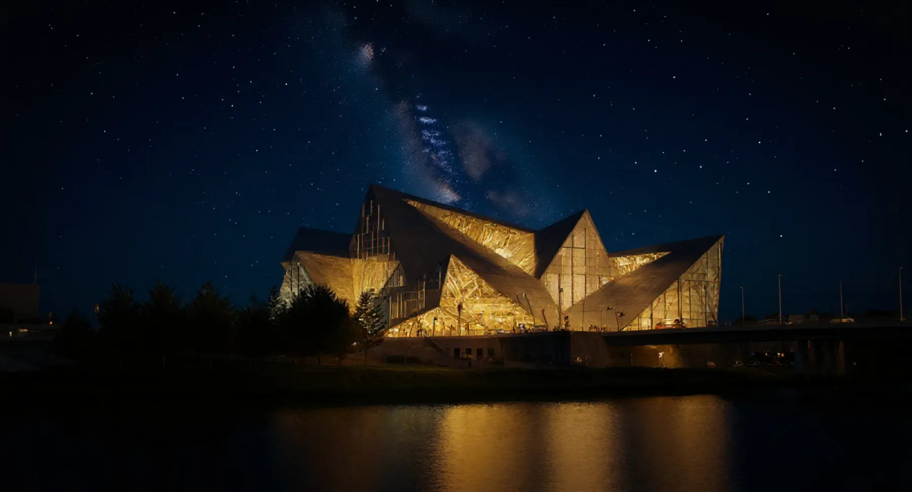
Interlude
Beneath the facades, the traboules link courtyards and lanes — a discreet labyrinth Lyon has kept since the Renaissance.
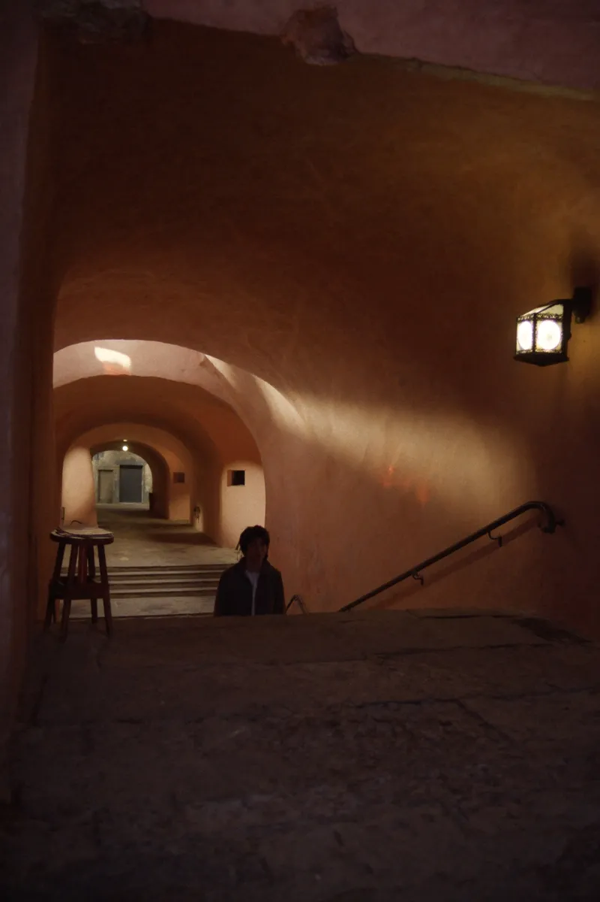
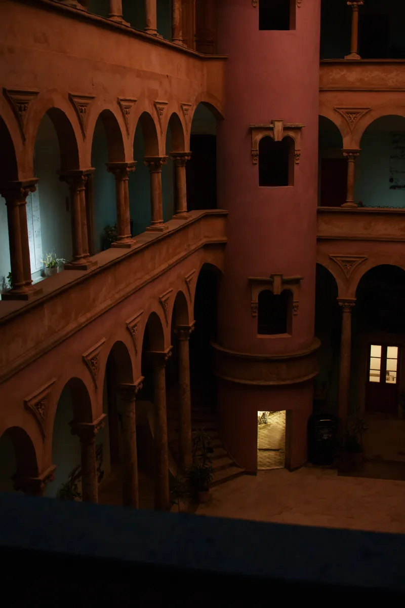
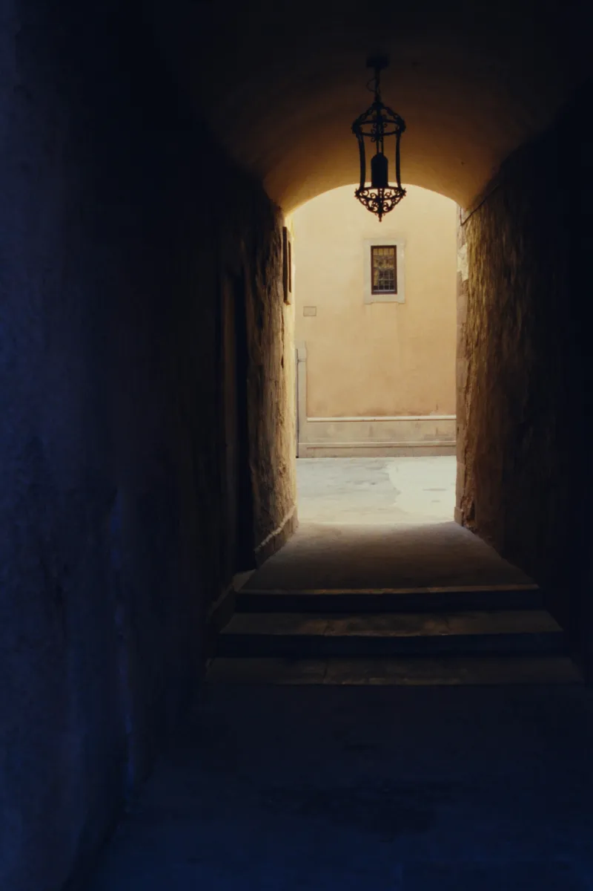
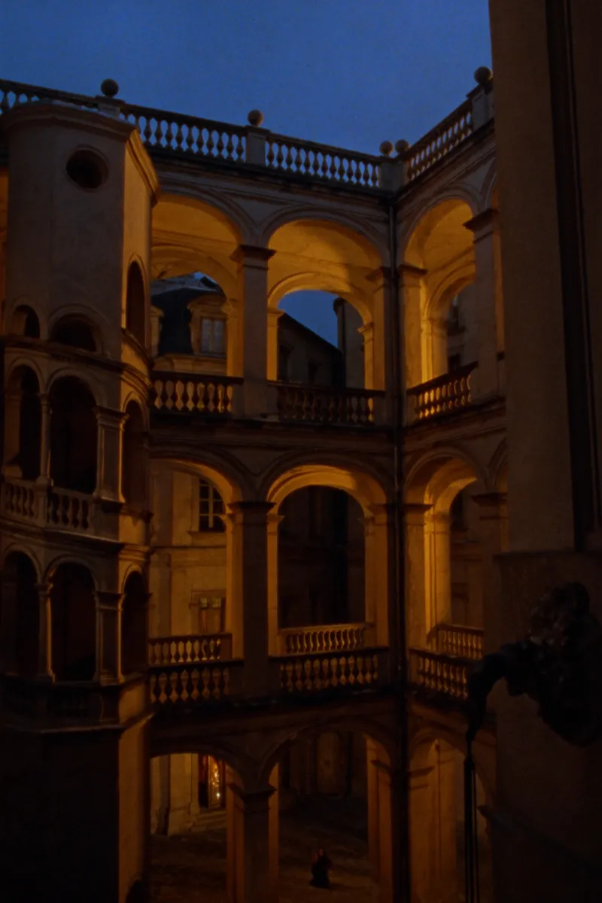
Two rivers, a hill crowned with light, and a Renaissance old town made for long lunches, late strolls, and lamplit evenings.
01 / 06
Pont Bonaparte crosses the river in three pale-stone arches, linking Bellecour to Vieux Lyon beneath the illuminated hill.
02 / 06
Cobbled traboules, Renaissance courtyards, bouchon tables, and riverside cafés stay within a short walk of the hill.
03 / 06
Raised high above the city after 1870, the basilica watches over Lyon with its four octagonal towers facing the sky.
04 / 06
Carved into the hill under Augustus, the great Roman theatre still hosts summer nights under the stars.
05 / 06
Between Rhône and Saône, one of Europe's largest pedestrian squares rolls out its red gravel beneath the statue of Louis XIV.
06 / 06
At the southern tip of the peninsula, the crystal-and-steel museum closes the visit where the Rhône embraces the Saône.